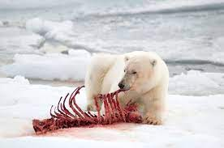
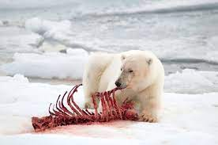

Polar bears are the most carnivorous of all the bear species. They metabolize fat more efficiently than protein, and their energy-rich diet enables them to have a larger body size than other bears. Polar bears feed primarily on ringed seals, but will also eat bearded seals, harp seals, hooded and harbor seals, when available. Larger prey species such as walrus, narwhal and beluga are occasionally hunted. Polar bears will readily scavenge on marine mammal carcasses.
Polar bears will also eat birds, fish, vegetation and kelp, although the caloric contribution of such foods likely contributes little to their overall sustenance. Bears that remain on land during the summer months rely primarily on their fat reserves and conserve their energy by remaining inactive most of the time.Polar bears will also eat birds, fish, vegetation and kelp, although the caloric contribution of such foods likely contributes little to their overall sustenance.Food can be hard to come by for polar bears for much of the year. The bear puts on most of its yearly fat reserves between late April and mid-July to maintain its weight in the lean seasons.
 

| Animal | Description |
|---|---|
| Ringed Seals | a small head; a short cat-like snout; and a plump body. |
| Walrus | wrinkled brown and pink skin, long, coarse whiskers, flat flippers, and lots of blubber |
| Narwhal | straight tooth (or tusk) that protrudes two to three meters out of the upper left jaw. |